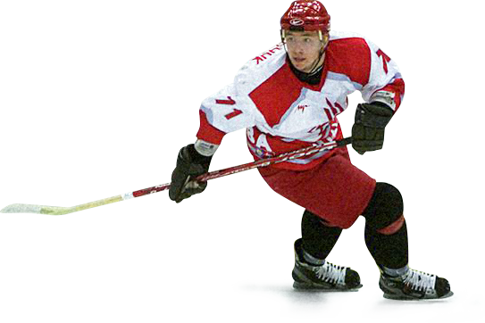

Эту пятилетку удачной не назовёшь. Вроде и на тренерском мостике команды стояли такие спартаковские мастодонты, как Виктор Шалимов, Евгений Зимин, Александр Якушев и Фёдор Канарейкин, а результата команда не добивалась.
скамейке — Александр
Якушев
Мало того, в сезоне-1998/1999 команда вылетела из Суперлиги, что больно ударило по самолюбию всех спартаковцев. К сожалению, возвращение не получилось быстрым и затянулось на два сезона.
После сезона-1999/2000 главным тренером вместо Александр Якушева стал Николай Соловьёв, в своё время сыгравший за «Спартак» всего одну игру. Новая метла помела по-новому: в начале сезона за нарушение режима были отчислены два игрока, что случилось чуть ли не впервые в истории нашего клуба. Настрой сохранился до самого финиша, на котором путёвки в Суперлигу оформили «Спартак» и «Крылья Советов».

2001 год. Илья
Ковальчук в
«Спартаке»
Пожалуй, самой запоминающейся фигурой этого исторического отрезка можно назвать Илью Ковальчука. Юный уроженец города Калинина (ныне Тверь) приехал в Москву в школу московского «Динамо». Но что-то у юного дарования там не задалось, и 11-летний Илья поехал на один из международных турниров в составе «Спартака»-1983 под руководством Юрия Борисова. Да так и остался в спартаковской школе до выпуска, точнее, до попадания в команду мастеров.
Шестнадцатилетний Ковальчук дебютировал за основной «Спартак» в высшей лиге в сезоне-1999/2000. Провёл 49 матчей, в которых набрал 17 (12+5) очков и 75 минут штрафа. Но это были только цветочки. В следующем сезоне Илья в регулярном чемпионате сыграл 40 матчей, набрав 46 (28+18) очков, а в переходном турнире добавил к ним 18 (14+4) очков за 12 игр. Вы только представьте: 42 гола в 52 матчах в 17 лет!
забросил 42 гола в 52
матчах
Естественно, за Ковальчуком пристально следили скауты многих команд НХЛ, и на состоявшемся в июне 2001 года драфте новичков он был выбран под первым номером командой «Атланта Трэшерс», куда тут же и уехал за скромную компенсацию родному клубу.
Можно только фантазировать, насколько сильнее был бы «Спартак» в следующем сезоне с Ковальчуком в составе, впрочем, об этом в нашем следующем рассказе. Остаётся только сожалеть, что самый громкий воспитанник «Спартака» XXI века так и не сыграл за красно-белых на высшем уровне. Может быть, пока.